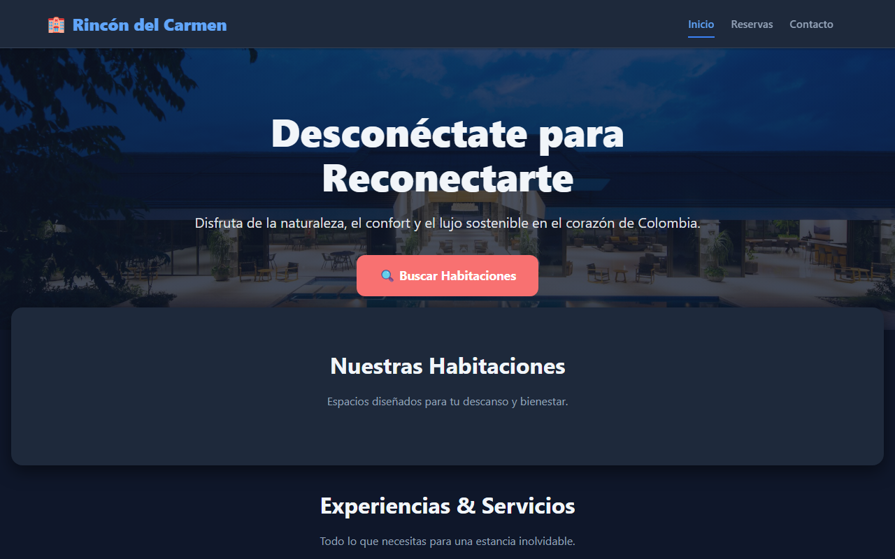

Demo en vivo
01 · Web
Hotel El Rincón del Carmen
Sistema de reservas de habitaciones
- Problema que resuelve
- Un hotel necesita que sus clientes busquen y reserven habitaciones en línea sin que se crucen las fechas, y que un administrador gestione habitaciones y reservas.
- Qué hace
- Registro e inicio de sesión, buscador por fechas y huéspedes con cálculo automático del precio, cancelación de reservas y panel administrativo (CRUD de habitaciones). Diseño mobile-first.
- Mi participación
- Proyecto individual: diseño, maquetación, componentes y lógica de negocio.
- Reto y solución
- Evitar reservas duplicadas. Escribí un algoritmo que compara los rangos de fechas antes de confirmar una reserva. Además separé la interfaz en Web Components reutilizables para que el código fuera mantenible.